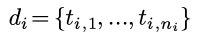
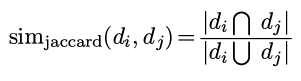

1. Introduction to substring search
"most ingenious algorithm we've seen so far ...
More efficient ...
1. Shortest Paths APIs
context: directe, weighted graphs ...
1. Introduction to MSTs
Given: undirected connecte ...
1. Intro to digraphs
Has profound differences wrt undirected graphs.
def: digraph
edges: have directions
vertex: distinguish indeg and outdeg
digraph pbs:
- path/shortest path ...
1. Intro to graphs
Graph: vertices connected by edges.
terminology:
- path: sequence of vertices connected by edges
- cycle: path with same starting and ...
除了上次介绍的minhash方法以外, 还有一种常见的hash方法, 叫做simHash. 这里做简要介绍.
这个hash函数的背景和上次一样, 还是考虑把文本抽象为ngram的集合:

然后相似度依旧是Jaccard similarity:

simHash
simHash的方法听上去比minHash还要简单:
- 对一个文档d中的每一个term(ngram, shingle) t, 计算其hashcode(比如用java内建的
Object.hashCode()函数) hash(t). - 把d中所有term的hash(t)合成为一个hashcode作为d的hashcode simHash(d): simHash(d)的长度与hash(t)相同, simHash(d)的第k个bit的取值为所有hash(t)第k个bit的众数.
写成数学表达式很吓人, 其实只不过不断在{0,1}和{-1 ...